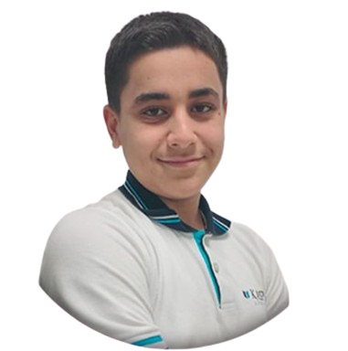

JrTesla
Hi, I am
Jahad Abdulla
AI/ML Engineering Student



Hi, I am
Hi! My name is Jahad Abdulla, and I’m a 7th grader from Baku, Azerbaijan. From a young age, I’ve always been fascinated by how things work, especially when it comes to technology and innovation. Whether it’s electronics, robotics, or creating new gadgets, I’ve always loved diving into projects that allow me to explore the endless possibilities of the tech world.
As a kid, I spent countless hours tinkering with toys, figuring out how they worked, and often finding ways to improve them or turn them into something completely new. Over time, this curiosity grew into a strong passion for engineering and robotics. I started learning about how machines are built and how they can be programmed to do amazing things. I even began building my own robots and experimenting with different types of sensors and microcontrollers like Arduino and Raspberry Pi.
In school, I’m always looking for opportunities to learn more about science, technology, and engineering. I enjoy participating in hands-on projects, and I love being part of groups that work on exciting tech challenges. One of my goals is to join competitions like Teknofest and others, where I can showcase my projects and learn from other young engineers and innovators. My favorite subjects are STEM (Science, Technology, Engineering, and Math) because they give me the chance to apply what I’m learning to real-world problems.
Apart from robotics, I’m also interested in artificial intelligence (AI) and how it can be used to make machines smarter and more efficient. I’m currently working on a project where I’m using AI to help robots recognize objects and make decisions on their own. It’s amazing to see how technology is evolving and how much we can do with the right tools and creativity.
Another big passion of mine is aviation. I’m fascinated by airplanes, rockets, and anything that can fly. I love studying how aircraft are designed, how they overcome the forces of nature, and how engineering makes flight possible. Lately, I’ve been working on projects that combine my love for robotics and aviation, like building small flying drones and designing miniature jet models. In the future, I dream of contributing to the world of aerospace engineering and helping create the next generation of smart, sustainable aircraft.
I believe that technology is the key to solving many of the world’s problems, and I want to be part of that change. Whether it’s developing new sustainable energy solutions, building smarter robots, or creating better ways to connect people, I want my work to have a positive impact on the world. That’s why I’m always pushing myself to learn new skills, try new things, and take on bigger challenges.
In my free time, I love reading books, watching tech documentaries, and keeping up with the latest trends in robotics, AI, and aviation. I’m also a big fan of video games and like to see how they incorporate technology and design into their gameplay. I enjoy playing games that involve strategy and problem-solving, as they help me think critically and approach problems from different angles.
As I continue to learn and grow, I’m excited about the future and all the possibilities that lie ahead. I know that there will be challenges along the way, but I’m determined to keep working hard and pushing the boundaries of what’s possible. My dream is to one day become an engineer, inventor, and leader in the field of technology, and to inspire others, especially young people, to pursue their passions and never stop learning.
I hope to continue building projects, exploring new technologies, and sharing my journey with others. I believe that anything is possible if you are curious, dedicated, and willing to learn. I can’t wait to see where this journey takes me!


Won 1st place in the school-level rocket competition in 2024.
Secured 3rd place in Robofest International 2023, showcasing robotics innovation.
Awarded 3rd place in the 2022 Singapore and Asian Schools Math Olympiad.
Awarded 1st place in Fibonacci in 2025.
Achieved 3rd place in the ITECX25 innovation competition in 2025.
Talked about AI in TEDx Kaspi Liseyi Youth in 2024.
Achieved 1st place in the Robotex Autonomous Car competition in 2025.